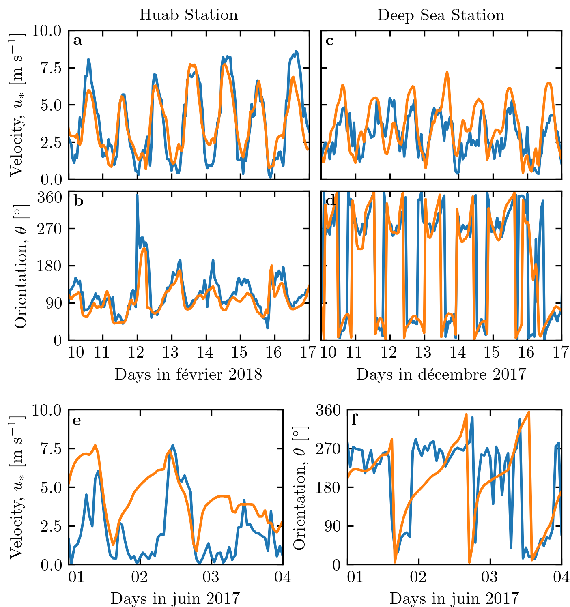

Note
Click here to download the full example code
Figure 2¶
import numpy as np
import matplotlib.pyplot as plt
import matplotlib.gridspec as gridspec
import matplotlib.dates as mdates
import calendar
from datetime import datetime, timedelta
import sys
import os
sys.path.append('../')
import python_codes.theme as theme
def tick_formatter(ax, fmt='%d'):
myFmt = mdates.DateFormatter(fmt)
ax.xaxis.set_major_formatter(myFmt)
ticklabels = ax.get_xticklabels()
ticklabels[0].set_ha('left')
# Loading figure theme
theme.load_style()
# path
path_imgs = '../static/images/'
path_savefig = '../Paper/Figures'
path_outputdata = '../static/output_data/data/'
# Loading wind data
Data = np.load(os.path.join(path_outputdata, 'Data_final.npy'), allow_pickle=True).item()
Stations = sorted(Data.keys())
# Figure properties
variables = ['U', 'Orientation']
label_var = {'U': r'Velocity, $u_{*}~[\textup{m}~\textup{s}^{-1}]$', 'Orientation': r'Orientation, $\theta~[^\circ]$'}
labels = [(r'\textbf{a}', r'\textbf{b}'), (r'\textbf{c}', r'\textbf{d}'), (r'\textbf{e}', r'\textbf{f}')]
year = [2018, 2017]
month = [2, 12]
days = [(10, 17), (10, 17)]
month_calendar = {index: month for index, month in enumerate(calendar.month_name) if month}
stations_plot = ['Huab_Station', 'Deep_Sea_Station']
# #### Figure
fig = plt.figure(figsize=(theme.fig_width, 0.65*theme.fig_height_max))
# grids
gs = gridspec.GridSpec(2, 1, height_ratios=[2, 1], figure=fig)
gs.update(left=0.12, right=0.985, bottom=0.07, top=0.95, hspace=0.3)
gs_top = gs[0].subgridspec(1, 2, width_ratios=[1, 1], wspace=0.05)
gs_bottom = gs[1].subgridspec(1, 2, width_ratios=[1, 1], wspace=0.3)
# top grid
for i, station in enumerate(stations_plot):
tmin = datetime(year[i], month[i], days[i][0])
tmax = datetime(year[i], month[i], days[i][1])
# plots
gs_sub = gs_top[i].subgridspec(2, 1, height_ratios=[1, 1], hspace=0.08)
for j, (var, label) in enumerate(zip(variables, labels[i])):
ax = fig.add_subplot(gs_sub[j])
#
ax.plot(Data[station]['time'], Data[station][var + '_station'])
ax.plot(Data[station]['time'], Data[station][var + '_era'])
# label
ax.text(0.02, 0.93, label, ha='left', va='center', transform=ax.transAxes)
# axis label properties
ax.set_xlim(tmin, tmax)
tick_formatter(ax)
#
if i == 0:
ax.set_ylabel(label_var[var])
if var == 'U':
ax.set_xticklabels([])
ax.set_title(station.replace('_', ' '))
ax.set_ylim(0, 10)
if not i == 0:
ax.set_yticklabels([])
else:
ax.set_ylim([0, 360])
ax.set_yticks([0, 90, 180, 270, 360])
if i == 0:
ticklabels = ax.get_yticklabels()
ticklabels[-1].set_va('top')
else:
ax.set_yticklabels([])
ax.set_xlabel('Days in ' + month_calendar[tmin.month] + ' ' + str(tmin.year))
# bottom grid
tmin = datetime(2017, 6, 1)
tmax = datetime(2017, 6, 4)
for i, (var, label) in enumerate(zip(variables, labels[-1])):
ax = fig.add_subplot(gs_bottom[i])
#
ax.plot(Data[station]['time'], Data[station][var + '_station'])
ax.plot(Data[station]['time'], Data[station][var + '_era'])
# label
ax.text(0.02, 0.93, label, ha='left', va='center', transform=ax.transAxes)
# axis label properties
ax.set_xlim(tmin, tmax)
tick_formatter(ax)
plt.xticks([tmin + timedelta(days=i) for i in range((tmax-tmin).days + 1)])
ax.set_ylabel(label_var[var])
if var == 'U':
ax.set_ylim(0, 10)
else:
ax.set_ylim([0, 360])
ax.set_yticks([0, 90, 180, 270, 360])
ax.set_xlabel('Days in ' + month_calendar[tmin.month] + ' ' + str(tmin.year))
plt.savefig(os.path.join(path_savefig, 'Figure2.pdf'), dpi=600)
plt.show()
Total running time of the script: ( 0 minutes 1.248 seconds)